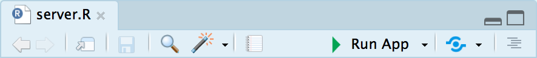

This tutorial is explicitly and exclusively focused on making a very simple Shiny app that will work on your local computer (the computer you’re typing your code into). Learn how to deploy Shiny apps to the web here.
In order to effectively build Shiny apps you must be careful about your directory (folder) structure and what lives in each of your code files; it is very important that Shiny apps should live in separate folders to one another.
It’s highly recommended that you use RStudio Projects to make your life easier and help write reproducible code (and Shiny apps) here’s an video overview of the benefits of using RStudio Projects.
Our example Shiny app is extremely simple and is embedded into this page. It contains two elements:
x^n, where n is the value selected from the pulldown menuThe code for this Shiny app is on the Github repo and the Shiny app is embedded into this page using a simple iframe, see here for more details.
All of the gubbins (stuff) needed to make Shiny apps work on your machine is provided by the R package shiny, which is installed from CRAN using install.packages("shiny").
Shiny apps require1 two files in the Shiny app folder:
ui.R: This is where the “look and feel” of a Shiny app is defined, what is displayed to the user. It is also sometimes called the “client-side” part of the Shiny appserver.R: This is where the work of the Shiny app is done, where R code is evaluated and output is generated that is then sent to the ui.R file to be displayed to the user.Create the two files described below in a folder and open either ui.R or server.R in RStudio, the “Run App” button shown below will be displayed - clicking this will “run” the Shiny app on your local machine and you will be able to interact with it.

Here’s the code for our ui.R file:
## Put this code inside of your ui.R file and save the file
fluidPage(
selectInput("exponent", label = "Exponent (i.e. x^n)", choices = 1:5),
plotOutput("curvePlot")
)
## Click on the "Run App" button in RStudio when you've written both the ui.R and server.R filesLet’s split our explanation of the file into the three functions used:
There are number of different types of “pages” that can be created with Shiny; fluidPage, navbarPage are two of the most popular. The former, fluidPage, allows us to design a Shiny app that should display nicely on mobile and desktop browsers. The function is provided a sequence of arguments which are shown underneath one another.
selectInput(inputId, label, choices) specifies a pulldown menu (more properly called a selectize menu) with a label and restricted to the choices specified. The inputId argument is the “input variable” that is communicated backwards and forwards between ui.R and server.R while the Shiny app is running.
In this specific instance, there is a variable we can access in the server.R file: input$exponent.
It is important to remember that even though our choices are integers, on the server-side (i.e. in the server.R file) the input will be converted to characters.
class(input$exponent)## [1] "character"plotOutput is designed to receive content from the server.R file generated with the renderPlot function and added to the output object, in this case "curvePlot". There are lots of different types of content you can generate in server.R to display in ui.R and this is always achieved with a pair of *Output and render* functions.
Here’s the code for our server.R file:
## Put this code inside of your server.R file and save the file
function(input, output, session){
output$curvePlot <- renderPlot({
print(input$exponent)
curve(x^as.numeric(input$exponent),
from = -3,
to = 3,
main = paste0("Plot of x^", input$exponent),
ylab = "y")
})
}
## Click on the "Run App" button in RStudio when you've written both the ui.R and server.R filesLet’s split our explanation of the file into the three sections
Information and data is transferred backwards and forwards between the ui and server components of the Shiny app via the input and output objects in this function within the server.R file.
The input object is composed of all the inputIds for your controls (i.e. selectInput) as well as inputs created by htmlwidgets in Shiny apps. These values can only be accessed in the server.R file, it is not possible to create controls in ui.R that are dependent on one another or dependent on data loaded into the Shiny app. Please do refer to the dedicated tutorial for creating interdependent controls and controls dependent on data.
The session argument of the function is used for accessing information about the current user of the app, and also allows for a range of advanced features of Shiny apps. It’s recommended that you always include the argument by default, as otherwise it might be omitted by accident when it’s needed.
renderPlot is designed to prepare a base R or ggplot2 chart to be displayed in the ui.R file via the plotOutput function, this is assigned to a named value in the output object (in this case curvePlot). There are lots of different types of content you can generate in server.R to display in ui.R and this is always achieved with a pair of *Output and render* functions.
It is often useful to access the current state of an input variable in a Shiny app, the simplest (but most naive) solution is to use print inside of a render* function as this allows values to be displayed in the console of RStudio.
1 Technically it is possible to build Shiny apps within a single file called app.R, however it is highly recommended that you split your Shiny app into two files because a single file quickly becomes unwieldy for even moderately “simple” Shiny apps.